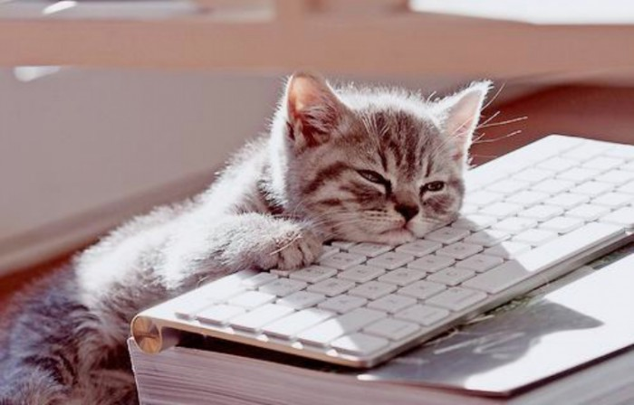
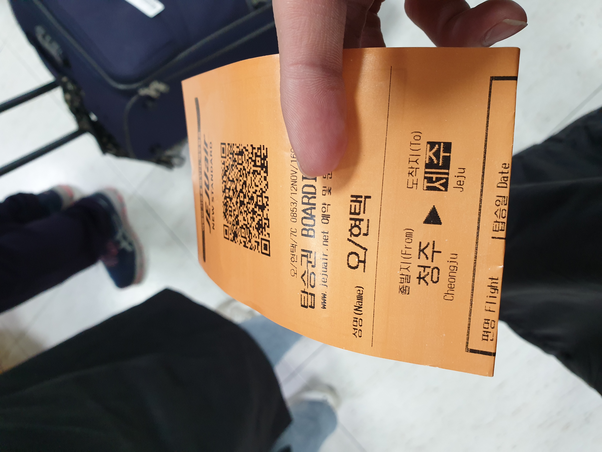
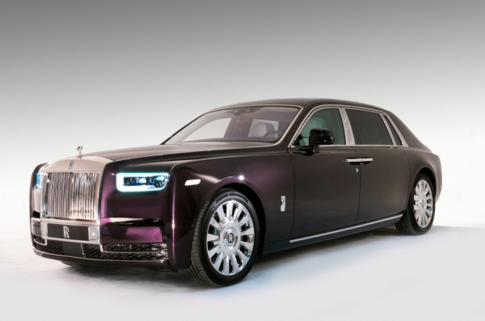
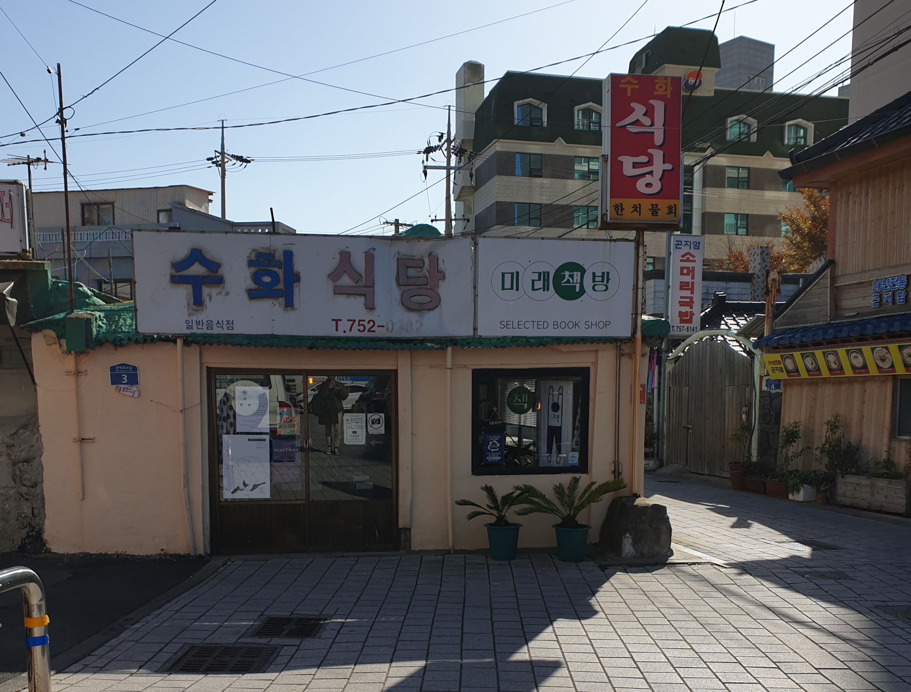

1.출발_
전역 날이 하루하루 가까워져 달력 두 장을 채 남기고 있지 않을 무렵,
하루종일 전혀 달라질 것 없는 일과에 신물이 난건지, 문득 너무 갑갑하다는 생각이 들었다. 그런 생각은 평소라면 그냥 단순히 불평으로 끝날 법도 할텐데, 당시의 나는 자기 자신이 영화 속 주인공이 된 거라고 착각이라도 했는지. 충동적으로 제주도 비행기티켓을 끊어버렸다.
그것도 6박 7일.
정말 계획은커녕 같이 갈 동행자조차 없었던 시작이였다.
2.도착_
1) 외제차를 박았네?
제주도에서 혼자 다니는 3일동안 교통수단이 필요했다.

혼자 렌트카를 빌리자니 금액부담이 크기에 스쿠터를 빌려서 타기로 결정
워낙 해안도로 등이 유명한 관광지다 보니 스쿠터를 타는 사람들이 많았는데, 하필이면 그날은 바람이 특히 심하고 날씨도 추운편이라 길거리에 스쿠터를 탄사람이 눈에 띄게 줄어있었다.
그렇게 좋지 않은 날씨에도 굴하지 않고 잘도 돌아다녔지만 어둑어둑해지던 저녁에 사건은 발생했다. 제주시내를 누비던 나는 이제 숙소로 들어가야겠다는 생각에 서행을 하며 들어가는 길을 찾는데...
쿵!
접촉사고가 일어난 것이다.
그 궂은 날씨에도 별 문제 없이, 2일 동안 아무문제 없이 타다가 난 사고, 아니 그것도 사고라고 하기에도 무안한 접축 사고였는데, 한가지 문제점이 있었으니...
그차는 ‘외제차’였다.
그냥 수리비를 드리고 지나가기에는 너무 큰 금액이였기에 눈물을 머금고 보험처리를 했고, 당시에 부모님께 괜한 걱정을 끼쳐드린 일이었다. 지금 생각해봐도 창피한 일화이다. :(
2) 구제옷 구경, 재밌네?
또 기억에 남는것 하나를 꼽자면 제주도에서 발견한 구제샵이였다!
@
원래도 옷사는걸 좋아하는 편이라 자주 구경하러 다녔는데, 보통 서울에서 구제샵을 다니면 둘중에 하나였다. 새옷보다 값이 싸거나, 비싼 브랜드라서 비싸게 팔거나.
하지만 이곳은 달랐다.
옷을 연도별로 정리를 하였는데 직원분이 설명해 주시기를 연도별로 옷의 쉐잎(shape)이 다르다는 것.
예를 들면 60년대에는 스웨트셔츠(맨투맨)의 밑 시보리가 심하게 긴 형태가 유행이였기 때문에 그런 형태의 옷들이 많이 생산되었고, 요즘 2010년대 이후에는 오버핏이 유행을 하며 어깨선이 길게 떨어지는 옷이 많이 나온다는 것 같은 이야기 말이다.
이런이야기는 생각보다 재밌는 부분이 많아서 옷들을 한번 더 유심히 보게 되었고, 구경자체가 참 재미있다는 생각을 한번 더 하게 되었다.
결국 그곳에서 적지않은 금액을 지불하고 리폼 가방제품을 하나 사게되었는데….
지금 생각해보면 고도의 상술이 아니였나 싶기도 하다.ㅠㅠ
3)알 만한 사람은 아는, 미래책방?
이번에는 알 만한 사람은 다 안다는 미래 책방.
제주시에 있는 소규모 책방인데, 그 흔히 말하는 ‘갬성’을 챙기는 것은 물론 내부에 비치해놓은 책들도 개인출판 책이 주를 이루어서, 이곳에서만 구할 수 있는 책들도 많았다.
나도 방문한 김에 책을 하나 구매해보았는데
‘서울의 3년 이하 서점들: 책 팔아서 먹고 살 수 있느냐고 묻는다면?’
이란 책이었다. 아무래도 미래책방처럼 관광지로서도 어느정도 인지도가 생긴 경우에는 모르겠지만, 일반적인 소형 서점은 대기업화 된 서점시장에서 살아남기 힘들겠다는 생각에 괜히 씁쓸해져서 골랐던 듯 싶다.
물론 아직 30페이지의 문턱을 넘지 못했다.ㅎㅎ
3.돌아가며_
이외에도 6박 7일은 생각보다 긴 시간이였기에 많은 것을 보고 또 먹어볼 수 있었다.
앞서 말했듯 정말 계획없이 갑자기 여행을 가고싶다! 떠나고 싶다! 란 생각으로 예매한 비행기 티켓에, 마지막 며칠동안 친구들의 합류로 잡은 펜션을 제외하곤 숙소도 잡지 않은 여행이였다.
항상 시간표 알바등의 계획에 맞춰 살려고 했던 것은 비단 나뿐만이 아닐 것일텐데, 여행만큼은 굳이 시간에 딱딱 맞춰서 계획을 짜며 놀 필요 있을까? 라는 질문을 해보고싶다.